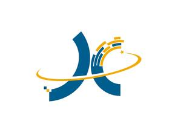

基本资料
- 基本信息
- 殷晓飞 · 男 · 1993.09
- 政治面貌
- 中共党员
- 现 居 地
- 上海 松江区
- 户 籍
- 江苏 镇江
期望工作
- 期望工作
- web前端 互联网
- 期望城市
- 上海 区不限
- 期望薪资
- 10K+
- 当前状态
- 在职，看看机会
教育经历
南京林业大学 · 2011.09-2015.06
本科 · 计算机科学与技术
工作经历

今翌信息科技（上海）有限公司 · web前端
2015.04.01-至今
-
- 工作描述：
- 全程参与www.nahehuo.com网站bootstrap改版,以及后续的新版块开发;
- 详细描述：
-
哪合伙前身是唯动力，是一个基于职场信用，专注人力资源的职场型社交网站；
2015年4月网站改版，涵盖招聘求职、创业、社交、教育、圈子等板块；
公司有3名前端开发（现2名），其中一个主要负责微网站的开发，我和另外一个人负责PC端的前端开发;
工作汇报对象: CTO。
-
- 工作描述：
- 全程参与b2b2c.zcspin.com新版网站开发
- 详细描述：
-
大工厂平台2011年9月在上海成立，是面向线上（网点）和线下（实体店）中小卖家的服装批发平台。
旧版网站：www.dagongchang.com
大工厂项目2015年8月拉到第一轮千万级投资，网站需要重新设计开发；
8月开始我和另外一名前端从哪合伙项目转向大工厂网站开发，负责大工厂新版网页开发b2b2c.zcspin.com；
主要职责：1.将PSD稿转为html；2.请求接口，绑定页面数据及逻辑处理;
工作汇报对象: CTO。
网感志察 · python开发
2014.11-2015.03
-
- 工作描述：
- 负责系统中一个板块（名称和功能保密）的日常开发与维护
- 详细描述：
-
北京志察数据科技有限公司注册成立于2012年，核心团队成员毕业于北大、清华等国内外名校。公司致力于成为客户所信赖的合作伙伴，在确保各方面合规的基础上，提供智能的解决方案，推动其盈利增长。公司通过对行业大数据解决方案的不断开发、生产和销售，领导行业技术革新。公司的大数据产品同时服务金融、传媒和法院等多个行业的客户。
负责系统中一个板块（名称和功能保密）的日常开发与维护；
工作汇报对象: 孟涛。
所获荣誉
- CET-6
- 第三届中国软件杯《基于协同过滤算法的电影推荐小站》全国二等奖 · j2ee
- 中国大学生计算机设计大赛全国三等奖、江苏省二等奖 · aps.net
- 大学生科技创新项目《森林火灾预警系统》发表SCI第二作者、已申请到国家专利 · aps.net；后毕设时用python.django重做
- 首届中国昆山花桥杯《人力资源管理系统》三等奖 · aps.net
自我评价
- 靠谱青年；执行力；
- 在尝试了一些语言后，找到了自己喜欢的方向，希望在前端这一方向上坚定不移的走下去；
- 我的优势：使用asp.net+sql server,j2ee+oracle,python+mysql开发过项目，相比很多前端更加容易与后端开发人员沟通，了解数据嵌套逻辑,也了解数据库设计；
- 热爱自己从事的事业，喜欢学习新的知识，立志成为一名优秀的前端开发“攻城师”。